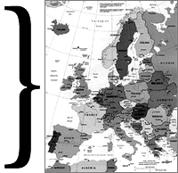

|
The state of the scene in Eastern
Europe.
| The size of the warez scene in Eastern
Europe has been steadily increasing since 1989. Prior to 1989 trading was
confined to just a few little groups which worked exclusively in Easter Europe.
Like the rest of the scene in 1989, all of them were using pbx, calling cards
and blue boxes to support their boards. In 97 ISDN and the occasional satellite
connection (rarer because of its high price) are the tools of choice. From
personal experience I can say that the ones who dominate usually have
connections of at least 56kpbs. Faster connection are still uncommon, a big
problem in eastern Europe, and one which has had a big effect on the way our
scene works.
|
 |
Most people use modems and connect with a server owned by a
monopolist -telecommunication firm. The connection is terrible (prone to
disconnecting and often busy) and too slow (max. 33.600 kbps). Telephone bills
are also very high in Eastern Europe, because all the countries here have only
one big telecommunication firm (like TPSA in Poland). As you can
guess, the level of service is very, very poor. Users have difficulty connecting
to the internet and can't stay connected to boards long enough to trade
decently. Despite these many problems, the Easter European scene has improved
considerably over the last year.
Every country in Eastern Europe has a number of groups, but most are more
interested in pressing and selling cds than competing on sites. Cds are recorded
with the latest releases, and then sold at local computer markets. Selling Cds
is very common because it's accepted by the community, and the police don't
bother to enforce copyright laws.
The most popular warez groups in Eastern Europe for games are
Razor 1911, Paradigm, Hybrid, Class, and for utils Pirates with
Attitudes, Drink or Die, and X-Force provide the bulk of the releases. In
addition to release groups, Reality Check Network (emags), The Hacker
Choice (hacking and releasing utilities), United Cracking Force, and Phrozen
Crew (cracking) are very popular too.
People who begin working in the computer market and have never heard of
the scene, begin to have contact with it first through *.nfos and soon after
through the websites maintained by release groups. The scene in Eastern Europe
is still very tied to the boards. The legendary Polish board "Are
You Sure?" was the starting point for many Polish crackers,
hackers, and coders, maybe most. The board was up for 5 years and used to have
contact with big name groups like Amnesia, Parasite, Tri Star and Red
Sector. "Are You Sure?" staff shared experiences, warez and
information with many other great boards (located in Sweden, Belgium, France,
Germany, Russia, USA and Canada). "Are You Sure?" was
located in a very big government institution (the main sysop worked there) and
received at least 200 megs a week (which for Europe at the time was a very very
high volume). "Are You Sure?" was a central point for
the entire scene in this region (excluding Russia - where DOD's and
Motiv8's were the biggest boards).Unfortunately when the sysops
changed their jobs, the board went down.
My own experience with the scene has been somewhat short (about 3 years) but
unusual because I've spent all of it in the PC scene. Amiga has never interested
me, though I know and respect a lot of people from the Amiga scene because I
think the Amiga scene has a very great tradition.
I don't know why the Amiga is now more popular in
Eastern Europe than the PC. I've talked with my friends from Czech and Hungary
and they say it's the same where they are. In Eastern Europe people don't hear
much about the PC scene, so maybe that's why the Amiga is so dominant.
Obviously, the Amiga scene isn't a very good fit with the PC scene with respect
to couriering or supplying.
To build a strong Eastern European scene we'll need help from
the big release and courier groups, but as the level of skill and connection
speeds rise, that'll happen. Meanwhile when we ask randomly chosen people from
Eastern Europe "What do you think about warez?", the
answer is "It's OK!" or "cool."
The situation is different from the one in West in Europe where people aren't so
enthusiastic, and very often hate everything concerning the scene (especially
the warez).
So I'm waiting now for the time when people from my region will start
to cooperate with the internationally known scene groups., and I think that this
time isn't very far off. The number of people with a desire to be part of the
international scene is increasing. Hopefully we'll be able to add our methods
and abilities to it in the near future.
_/\->
kot <-/\_ | |